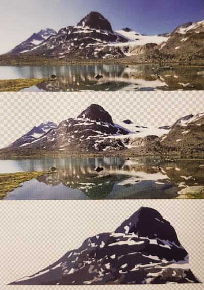

Oppgave 1
Under ser du et bilde som er satt sammen av tre bilder med disse bruksområdene:
Til bruk på nettside
Til bruk på nettside
Til bruk som logo på store reklameskilt
Ved å klikke på ett av bildene under kan du få litt informasjon om bildene.
